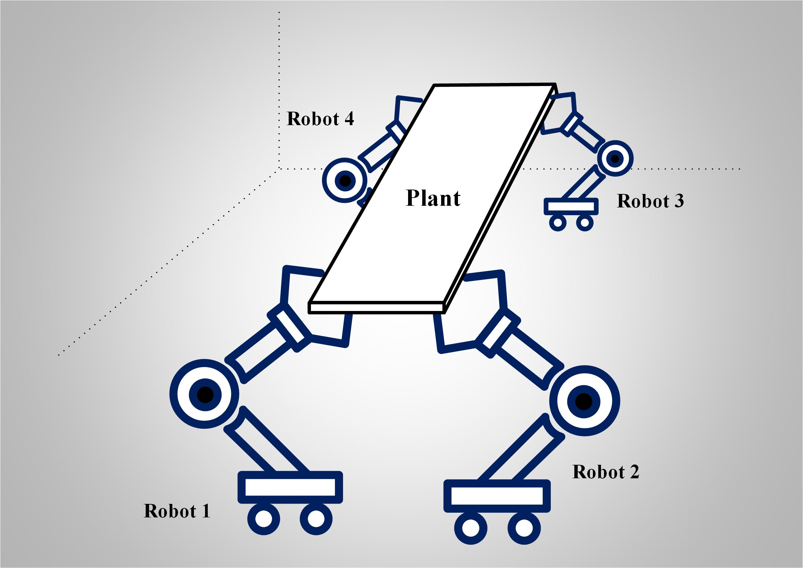
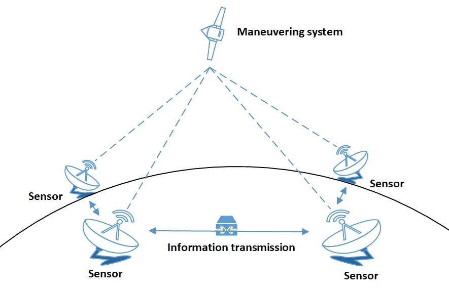
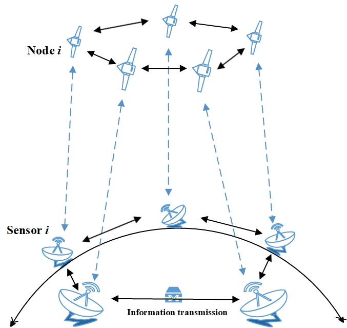
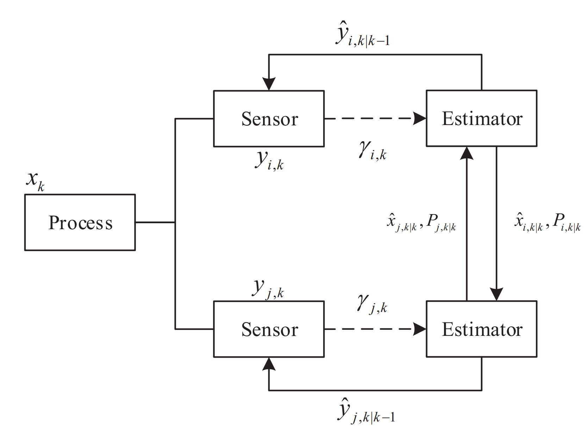

Research
Peihu Duan, Department of Electrical and Electronic Engineering, The University of Hong Kong
Research Interests
- Cooperative State Estimation
- Cooperative Decision-Making
- Reinforcement Learning Control
Research Experience
- Self-Organizing Behavior of Multi-Agent Systems
|
 |
By leveraging information sharing and collaboration among individuals, multi-agent systems
are expected to achieve high-level swarm intelligence, applicable to more complex application scenarios. For the distributed state estimation and control issues of multi-agent systems,
how to realize the self-organization design and implementation of individuals for estimation and control strategies is not only of theoretical significance, but also of
practical values. For this issue, we have developed a class of self-organizing control frameworks for multi-agent systems. Relevant works:
- Privacy-Preserving Cooperative Control of Multi-Channel Systems with Self-Organizing Agents
- Linear Quadratic Regulator Design for Multi-Input Systems with a Distributed Cooperative Strategy
- Task-Space Fully Distributed Tracking Control of Networked Uncertain Robotic Manipulators without Velocity Measurements
- Relative State Formation-based Warehouse Multi-robot Collaborative Parcel Moving
|
- Distributed State Estimation for Uncertain Systems
|
 |
Over the past two decades, state estimation with sensor networks have received increasing research attention due to a wide range of
practical applications, e.g., in industrial production, environmental protection and automatic vehicle.
In particular, how to realize distributed state estimation without accurate system models for dynamical systems are becoming a strategic research direction in many fields.
For this issue, we have designed two classes of distributed state estimation methods for uncertain systems. Relevant works:
- Distributed State Estimation for Uncertain Linear Systems: A Regularized Least-Squares Approach
- Distributed State Estimation for Uncertain Linear Systems with A Recursive Architecture
- Resilient State Estimation for Complex Dynamic Networks with System Model Perturbation
- Distributed State Estimation for Continuous-Time Linear Systems with Correlated Measurement Noise
|
- Sensor Scheduling for Cyber-Physical Systems
|
 |
Cyber-Physical Systems (CPSs) have been rapidly developed for industrial and military applications, supported
by the well-developed technologies of sensing, communication and control. To guarantee satisfactory performances of CPSs,
one critical issue is ensuring a reliable transmission of tremendous sensing data from wireless sensors to remote estimators for state estimation.
For this issue, we have designed a class of sensor scheduling methods for CPSs described by complex networks. Relevant works:
- Optimal Sensor Scheduling for Complex Networks Under A Distributed Remote Estimation Framework
- A Novel Modeling and Scheduling Method for Modern Roundabouts
|
- Event-Triggered Control and Estimation Strategy
|
 |
Event-triggered control and estimation (ETCE) is a kind of reactive strategies
that generates control actuation and sensor sampling only when necessary, which has received increasing attention in real-time control systems.
Compared with traditional time-triggered control, ETCE can efficiently reduce the number of execution and communication of control tasks while preserving the desired closed-loop performance.
We have incorporated some deterministic and stochastic event-triggered control and estimation methods into multi-agent systems. . Relevant works:
- Event-based Distributed Tracking Control for Second-order Multi-Agent Systems with Switching Networks
- Leader-Following Consensus of Multi-Agent Systems with Switching Networks and Event-Triggered Control
- Fully Distributed Filtering with A Stochastic Event-Triggered Mechanism
|
|